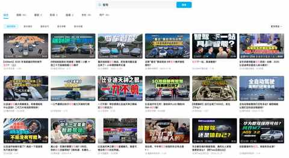
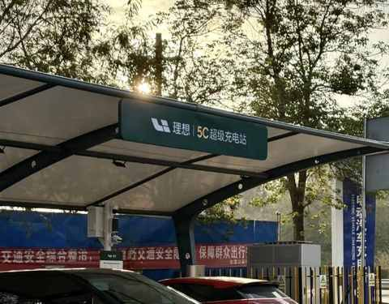
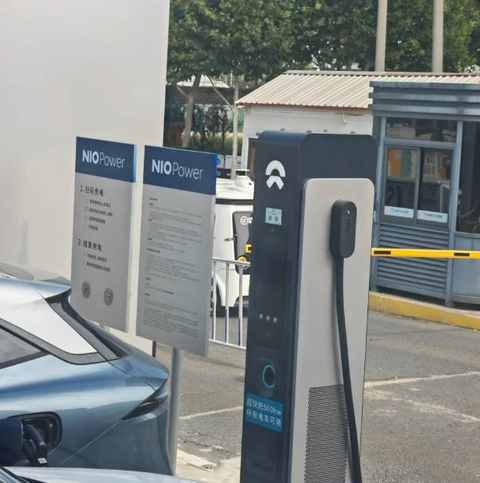
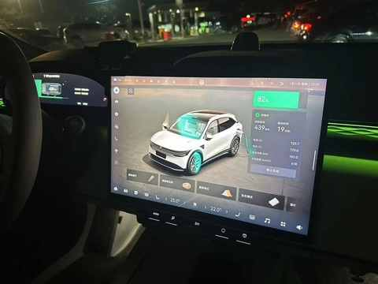
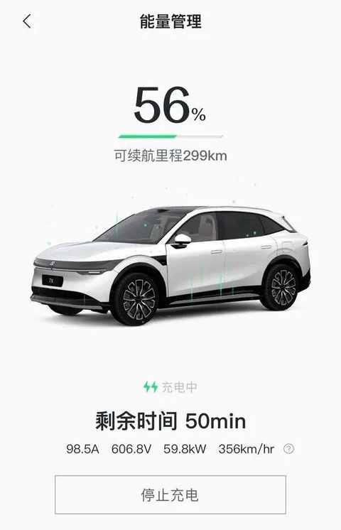

电车春运 2300km 的智驾感受：用了就真回不去啦！
先对齐 “智驾” 的定义，标题中提及的 “智驾” 约等同于各个车厂的高阶智驾，而且各个车厂给自家的高阶智驾都取了很独特的名字，好在现在有 ai 工具，豆包给到了 16 家的智驾名称和简介。

在 B 站检索 “智驾” 能看到丰富的多家车厂的对比测评内容：

这些视频内容有参考性，但要建立对 “智驾” 更具体的认知，就必须用起来，根据自己的用车体验去感受。
由于没有抢到火车票，在 2025 年的春节，首次用纯电车开长途，一共 2600多公里，大概90%多的里程的是用 “智驾” 完成的。
1月 21 日（腊月廿二，充电未排队）
第①段：560km，上海 ➡️ 安庆
1月 22 日（腊月廿三，充电未排队）
第②段：560km，安庆 ➡️ 上海
1月 27 日（腊月廿八，充电未排队）
第③段：560km，上海 ➡️ 安庆
1月 29 日（正月初一，充电未排队）
第④段： 400km，安庆 ➡️ 淮北
1月 31 日（正月初三，充电排队40 分钟）
第⑤段：600km，淮北 ➡️ 上海
10 天时间里面的 5 次高速长途驾驶，超 2300km 的智驾整体使用下来，有几个感受比较深的地方：
1️⃣ 满电出发很重要
能掌握在高速上充电的主动权，遇到充电排队的服务区可以毫不犹豫的直接去到下一个服务区或者直接下高速充电+休息。
2️⃣ 智驾既实用又可靠性
相较城区智驾有太多的博弈场景，在快速路、高架、高速等封闭道路上的可靠程度上升很多，堵车的时候更能感受到其对驾驶体验的提升，虽然跟车距离偏保守，容易被插队。
比较意外的是被插队之后的心态有了挺大变化，之前被插队之后会不由自主的加强戒备，缩短跟车距离，情绪可能会有较大波动。
使用智驾之后，刚开始的反应依然是条件反射式的去主动防御，马上切成自己开，不过开了几分钟之后还是决定容易被插队就插队落，毕竟不用自己开，情绪稳定，心态平和。
3️⃣ 服务区充电桩数量不低
不少服务区同时有多家品牌的充电桩，路过的江浙服务区，大多都同时有国家电网、理想、蔚来的充电桩，这种时候可优先去理想和蔚来的充电桩，桩很新、功率更高、更稳定。


* 无需下载各种充电app，均能通过微信扫码完成充电。
4️⃣ 不过分在意电耗
知晓当下能行驶的里程是比电耗更重要的事情，随着充电桩的增多及快充的普及，续航焦虑会越来越成为一个伪命题，大约 30-50 分钟，一顿饭的功夫能轻松补能 200-400km（与充电功率相关）。


5️⃣ 需做好随时接管的准备
虽然使用智驾让驾驶人的双脚被解放，但依然要保持对路况的观察，规避在突发情况出现的时候能快速接管，自主控制车辆。
* 在路况很好的情况下速度来到 120km/h，观察到前方出现异常拥堵，果断主动接管不等智驾降低车速，提前踩刹车规避风险。
在没有用智驾之前，虽然很想尝试但多少是带有一些怀疑的态度，会觉得没有自己开靠谱等等。
但是用了之后，深入感受到智驾的开车逻辑和具体表现之后，就真回不去啦！